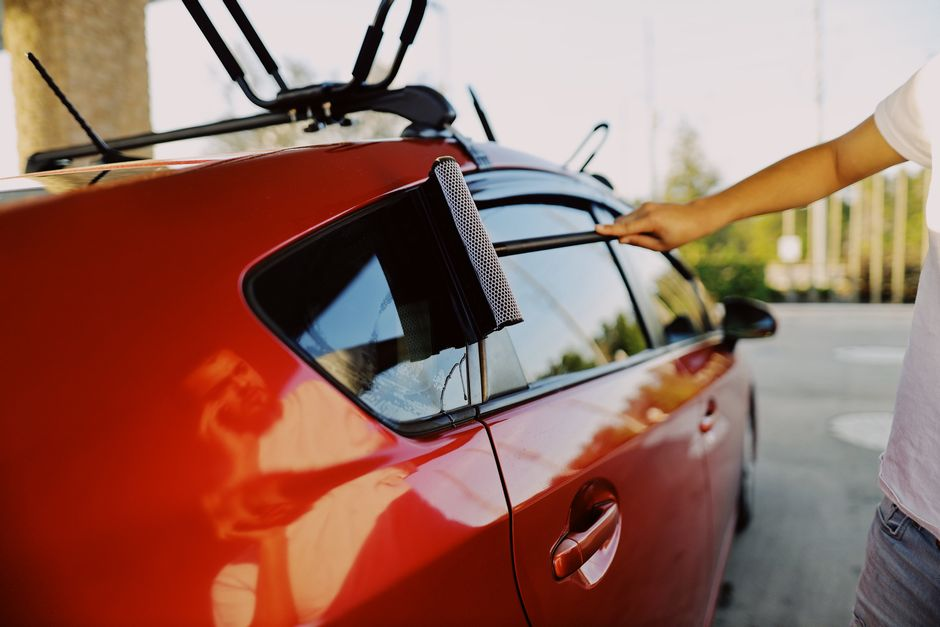

Flawless Auto Glass and Windshield Replacement
Restoring your vehicle's safety and clarity with professional auto glass solutions, from quick chip repair to complete car window replacement.
Get a Free QuoteComprehensive Auto Glass Services
We connect you with expert technicians equipped to handle all your auto glass needs quickly and safely.

Windshield Replacement
Complete replacement for severely cracked or shattered glass using premium, safety-tested materials designed for your specific vehicle make and model.

Chip Repair
Fast and reliable windshield repair for minor chips and cracks. Address small damage immediately before it spreads and requires a full glass replacement.

Car Window Replacement
Professional side and rear car window replacement ensuring a perfect fit, secure seal, and proper functioning of power window mechanisms.
Committed to Your Safety on the Road
At Confix Framevya, we understand that a damaged windshield is more than just an annoyance—it's a critical safety hazard. We partner with top-tier auto glass technicians to bring drivers comprehensive solutions, from swift chip repair to full windshield replacement.
Whether you need an urgent side car window replacement after a break-in or a quick fix for a rock chip, our promotional platform connects you with professionals focused on quality and durability.
Our goal is simple: to help you find reliable auto glass services that restore your vehicle's structural integrity so you can get back on the road safely and with complete peace of mind.

Customer Experiences
See what drivers are saying about the auto glass solutions we promote.
"The windshield replacement was incredibly fast and handled with true professionalism. My car looks brand new, and the optical clarity is absolutely perfect while driving."
— Sarah M., 2026
"I had a nasty rock chip right in my line of sight. The chip repair service was completely seamless and saved me from needing an expensive full glass replacement."
— David L., 2026
"Someone broke into my SUV and shattered the passenger window. The car window replacement process was straightforward, and the new glass fits perfectly with no wind noise."
— Elena G., 2026
Frequently Asked Questions
Answers to common questions about auto glass repair and replacement.
How long does a typical windshield replacement take?
Most standard windshield replacement services can be completed within 1 to 2 hours. However, it is highly recommended to wait an additional hour before driving to allow the urethane adhesive to cure properly and ensure maximum safety.
Can you perform a windshield repair on any crack?
Not all damage can be repaired. Professional chip repair is generally effective for chips smaller than a quarter and cracks shorter than three inches, provided they are not in the driver's direct line of sight or at the edge of the glass.
Will my insurance cover auto glass services?
Many comprehensive auto insurance policies cover auto glass and windshield replacement. Depending on your specific provider and policy details, a chip repair might even be covered completely with no out-of-pocket deductible required.
Do I need to wait to drive after a car window replacement?
Unlike windshields that bear structural weight and require strong adhesive curing, side car window replacement typically allows you to drive immediately after the service is completed, as they are bolted or clipped into the door's regulator mechanism.
What type of glass is used for replacements?
The service providers we promote utilize high-quality Original Equipment Manufacturer (OEM) or Premium Equivalent Aftermarket glass. This ensures that every windshield and car window replacement meets rigorous Department of Transportation safety standards.
Request a Quote
Need immediate auto glass assistance? Fill out our service request form to be connected with expert technicians serving El Paso, TX, and surrounding areas.
Service Area
El Paso, TX (and surrounding regions)
Operating Hours
Monday - Friday: 8:00 AM - 5:00 PM
Saturday: By Appointment